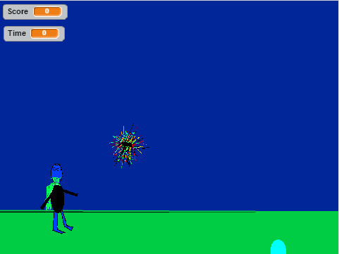
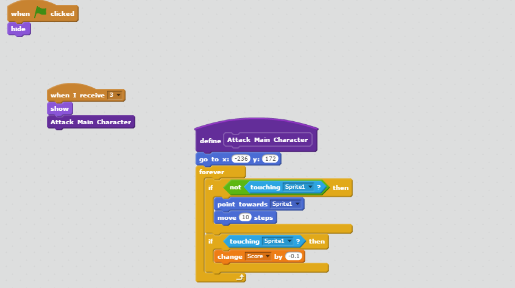

Final Project
 
Description:
This was my final project in this class, and I decided to create it with scratch because it allows me to do more things than python (or it easier for me to do so). The game is based on time and the score the player has at the end of the time. The player needs to get air bubbles for points and avoid the sea urchins. It has multiple levels and it is addicting.
Concepts Reviewed:
- Blocks: they are methods in scratch, where you can organize code better and not having to repeat multiple lines.
- If statements: After doing python and java, these made much more sense, and I reviewed them by using them frequently.
- Variables: I reviewed these by putting them in my project. They mad more sense now.